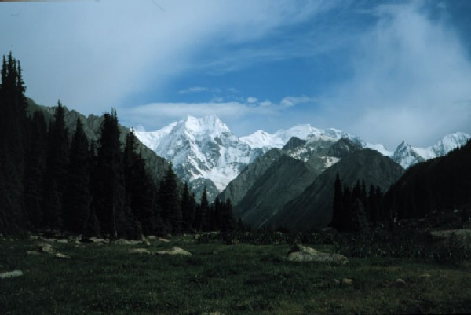
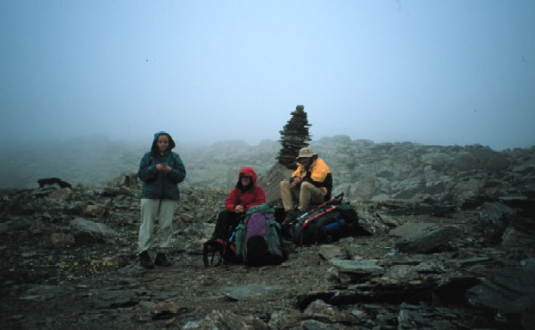
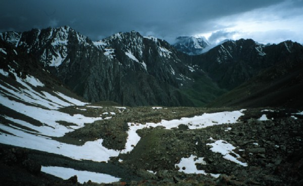
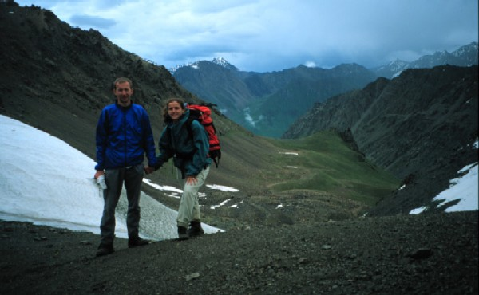
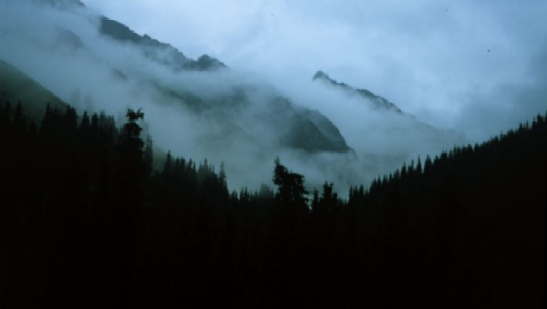

Terskey Alatoo, Tien Shan

Yedi Öküz duvarý (5,181m) / Jeti
Oguz wall (5,181m)

Yayla / Pasture

Yaðmur ve sis geliyor... / Rain
and fog creep in...

Teleti Geçidi (3,800m): cýkýþ rotasý /
Teleti Pass (3,800m): view backwards

Teleti Geçidi (3,800m): iniþ rotasý /
Teleti Pass (3,800m): view forwards

Yaðmur bulutlarý / Rain
clouds